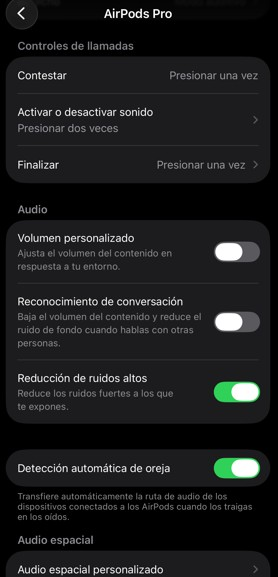
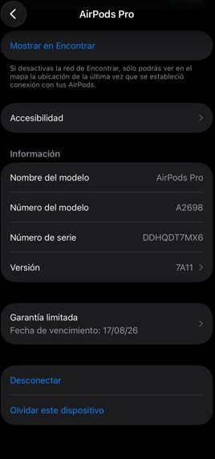
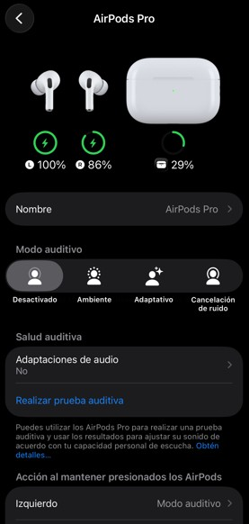

La cancelación activa de ruido reduce significativamente los sonidos externos para que puedas concentrarte completamente en tu música, llamadas o videos.
Los micrófonos detectan el ruido ambiental y el sistema lo elimina en tiempo real para ofrecer una experiencia de audio más clara y envolvente.
Es ideal para viajes, transporte público, estudio o trabajo sin distracciones.
El modo ambiente permite escuchar lo que sucede a tu alrededor sin quitarte los audífonos.
Los micrófonos capturan el sonido exterior y lo reproducen dentro de los AirPods de forma natural.
Esto es útil cuando necesitas hablar con otras personas o estar atento a tu entorno.
El audio espacial crea una experiencia de sonido tridimensional envolvente.
La música, películas y videos se escuchan como si vinieran de diferentes direcciones a tu alrededor.
El sistema adapta el sonido según el movimiento de tu cabeza para ofrecer mayor realismo.
Los AirPods Pro ofrecen hasta 6 horas de reproducción continua con una sola carga.
El estuche permite múltiples cargas adicionales, ofreciendo más de 30 horas de uso total.
Además cuentan con carga rápida para obtener varias horas de reproducción en pocos minutos.